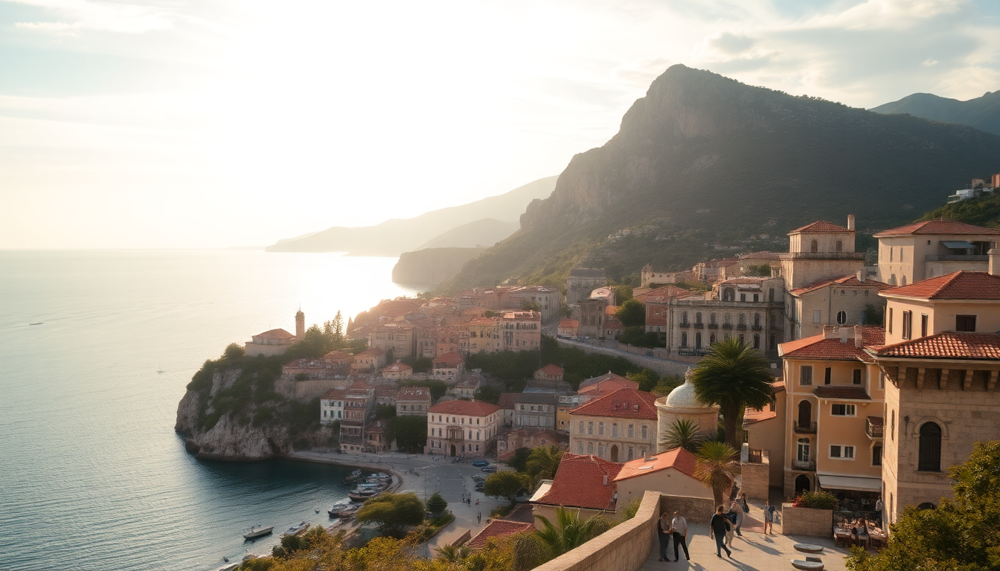

Getting Around Croatia: Ferries, Flights & Car Rentals

I spent three weeks bouncing between islands and mainland cities, and the biggest lesson was this: Croatia’s geography is deceptive. What looks close on a map can take half a day when you factor in ferry schedules, mountain roads, and airport logistics. Here’s what actually worked for me.
Should you fly between cities in Croatia?
Short answer: only if the route is over 300 km or you’re pressed for time. Domestic flights connect Zagreb, Split, and Dubrovnik through Croatia Airlines, but they’re not cheap — expect €80–150 one-way. The Zagreb-to-Dubrovnik flight is worth it (45 minutes vs 6 hours driving). I took the 7 AM from Zagreb Airport (ZAG) to Split Airport (SPU) and was on the ferry to Hvar by 10 AM.
- Zagreb to Dubrovnik: Fly. The coastal road is scenic but brutal in summer traffic.
- Split to Zagreb: Train or bus is fine if you have half a day. The flight is overpriced for 50 minutes.
- Dubrovnik to Split: Bus (FlixBus runs this route, ~4 hours, €20–30) beats flying when you factor in airport transfers.
Pro tip: book Croatia Airlines at least two weeks out for the best fares. Last-minute prices are punishing.
Are ferries the best way to get to the islands?
Yes, but you need to know the operators. Jadrolinija runs the main car ferries (Split to Hvar, Dubrovnik to Korčula) and is reliable but slow. Krilo and Kapetan Luka operate faster catamarans that cut travel time in half — at double the price. I took the Krilo catamaran from Split to Hvar Town and it was 55 minutes, smooth, and had AC that actually worked.
- Split to Hvar: Krilo catamaran (€25–35) docks right in Hvar Town. Jadrolinija car ferry goes to Stari Grad (cheaper but 2 hours).
- Dubrovnik to Korčula: Jadrolinija car ferry (3 hours, €12) is the budget option. Krilo does it in 2 hours for €30.
- Hvar to Korčula: Direct catamarans exist in summer only. Otherwise, go back to Split.
Book ferry tickets online through Jadrolinija’s website or Krilo’s portal during peak season (July–August). Walk-up tickets sell out by 9 AM in Hvar.
Is renting a car in Croatia a good idea?
It depends entirely on where you’re going. In Dubrovnik and Split old towns, a car is a liability — parking costs €3–5 per hour and spaces are scarce. I rented from Sixt at Split Airport for a week (€350 in June, automatic transmission) and it was perfect for exploring the Pelješac Peninsula and Plitvice Lakes. For island-hopping, skip the car entirely.
- Pick up in Zagreb: Best for exploring inland (Plitvice, Rovinj). Drop in Split or Dubrovnik — one-way rentals cost €50–100 extra.
- Avoid in Dubrovnik: The old town is pedestrian-only. Park at the Ilijina Glavica garage (€2/hour) and walk.
- Watch for tolls: The A1 highway from Zagreb to Split costs about €25 in tolls. Cash or card accepted.
Rental tip: manual transmission is standard and half the price of automatic. If you can’t drive stick, book automatic cars months ahead — they sell out.
What’s the best way to get from Dubrovnik to Split?
The coastal bus along the D8 road is the default answer, and it’s not bad. I took the FlixBus at 8 AM and arrived in Split around 12:30 PM with a 15-minute stop at a roadside café in Ston. The views of the Adriatic from the bus window are genuinely stunning — cliffs, turquoise coves, and tiny stone villages.
- Bus: FlixBus or Arriva, €20–30, 4 hours. Book seats on the right side for sea views.
- Car rental: 3 hours if you drive non-stop, but you’ll want to stop at Ston for oysters and the old salt pans.
- Boat: Krilo runs a catamaran (4 hours, €40) but it stops at islands along the way. Good if you’re island-hopping, slow if you just want to get there.
I’d take the bus. It’s cheap, comfortable enough, and drops you at Split’s main bus station, a 5-minute walk from the ferry terminal.
How do you get around Zagreb without a car?
Zagreb is the one city where you don’t need a car at all. The Zagreb Electric Tram network (ZET) covers the entire city. A single ride costs €0.50 from any newspaper kiosk, or €1.50 from the driver (cash only). I used the tram to get from Hotel Dubrovnik in the lower town to Maksimir Park in 20 minutes.
- Trams: Lines 6 and 13 connect the main train station (Glavni Kolodvor) to Ban Jelačić Square and the upper town.
- Uber/Bolt: Cheap and reliable. A ride from the airport to city center is €10–15.
- Walking: The upper town (Gradec) and lower town (Donji Grad) are very walkable. Skip the funicular — it’s a 60-second ride for the same price as a tram ticket.
If you’re arriving by train from Split or Rijeka, Zagreb Glavni Kolodvor is right in the center. You can walk to most hotels in 10 minutes.
What about getting to Hvar from Split?
The ferry from Split to Hvar is the only practical option, but you have two choices depending on where you want to land. Hvar Town is the main tourist hub with nightlife and restaurants; Stari Grad is quieter and closer to vineyards and beaches. I stayed in Hvar Town at Hotel Adriana and took the Krilo catamaran — it docked 50 meters from the hotel entrance.
- Hvar Town: Krilo catamaran (55 min, €30). Drops you at the main harbor. Best for nightlife and dining at Konoba Menego.
- Stari Grad: Jadrolinija car ferry (2 hours, €10). Better for rental car access and wine tours at Tomić Winery.
- Ježa Island: No direct ferries. Take a taxi boat from Hvar Town (€15–20, 15 minutes).
Book return tickets. Same-day round trips sell out by noon in July. I learned this the hard way and spent an extra night on Hvar — not the worst problem to have.
FAQ
Can you take a rental car on the ferry to Hvar? Yes, but only the Jadrolinija car ferry from Split to Stari Grad. The Krilo catamarans don’t carry vehicles. You’ll pay about €30 for the car plus passengers. Book car ferry tickets online at least 24 hours ahead in summer — slots fill up by 7 AM.
Is it worth driving from Zagreb to Dubrovnik? Only if you have 3–4 days and want to stop at Plitvice Lakes, Zadar, and Split along the way. The A1 highway is fast but boring. The coastal D8 road is scenic but slow — expect 8–9 hours total. I’d rather fly and rent a car locally for day trips.
What’s the cheapest way to island-hop in Croatia? Jadrolinija’s regular ferries. A Split-to-Hvar-to-Korčula-to-Dubrovnik route costs about €25 total if you stick to the car ferries. The catamarans are faster but triple the price. Pack snacks — ferry cafeterias are overpriced and mediocre.
Conclusion
- Fly between Zagreb and Dubrovnik; take the bus or ferry for Split-to-Dubrovnik.
- Use Krilo catamarans for speed between Split and Hvar; Jadrolinija for budget island hopping.
- Rent a car from Zagreb or Split Airport for inland exploration, but skip it in Dubrovnik old town.
- Zagreb is best navigated by tram and foot — don’t bother with a car there.
- Book ferries and rental cars online at least two weeks ahead in summer. Walk-up availability is a gamble.